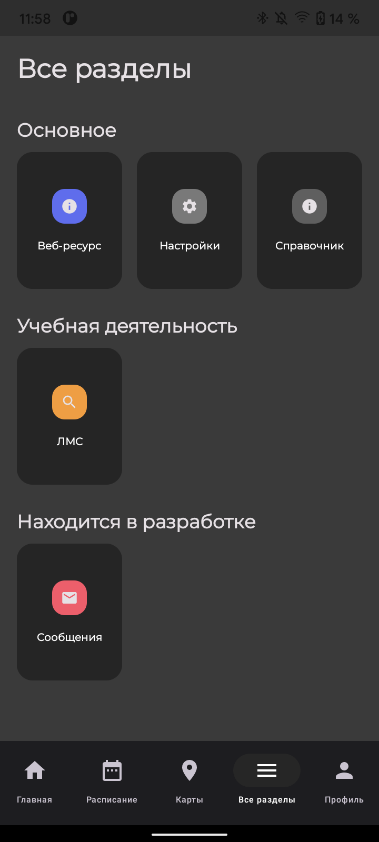
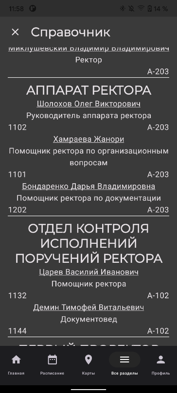

О проекте
О проектеАктуальность и проблематика
Цифровизация образовательного процесса является ключевым аспектом современного развития университетов. В ответ на требования студентов, преподавателей и общества в целом, образовательные учреждения вынуждены адаптироваться и внедрять цифровые технологии, чтобы обеспечить доступность, гибкость и удобство обучения. Современные студенты ожидают возможности онлайн-обучения, доступ к учебным материалам в любое время и с любого устройства. Цифровой университет предполагает трансформацию ключевых процессов вуза через ИТ-сервисы и микросервисные решения, что способствует оптимизации работы и повышению продуктивности. Студенты активно вовлекаются в процесс, что предоставляет им практический опыт и новые идеи для улучшения образовательной среды.
Цели и задачи проекта

Цель проекта: создание и внедрение ИТ-сервисов для
Московского политеха, что повысит продуктивность
студентов и сотрудников и обеспечит более удобное и
эффективное взаимодействие с университетскими сервисами.
Проект состоит из трех подпроектов:
1.Личный кабинет Московского политеха;
2.Мобильное приложение для Личного кабинета;
3.Сервис визуализации данных контакт-центра на базе Grafana.
Задачи по каждому подпроекту:
Описание полученных результатов


На этом этапе была сформирована команда для разработки Личного кабинета, включая специалистов по C#, Python, базам данных, фронтенду и DevOps. Разработчики начали анализировать существующие механизмы работы Личного кабинета и адаптировать их для дальнейшей модернизации. Работы продолжаются по интеграции микросервисов и созданию эффективной архитектуры. Разработчики для Android и iOS были успешно собраны в команды, что позволило начать параллельную работу над мобильными приложениями. Важно было создать прототипы UI-экранов для телефонного справочника в Figma, чтобы обеспечить согласованность интерфейса для обеих платформ. Команды также разработали единый подход к функциональности, обеспечивая одинаковый пользовательский опыт на всех устройствах.
На данный момент был развернут сервис Grafana на личном устройстве одного из разработчиков и создана тестовая база данных телефонии. Были созданы визуализации ключевых показателей, таких как время ожидания и продолжительность вызова, а также средние значения по этим показателям. Эти данные визуализируются в реальном времени, что позволяет отслеживать эффективность работы операторов и уровень обслуживания абонентов